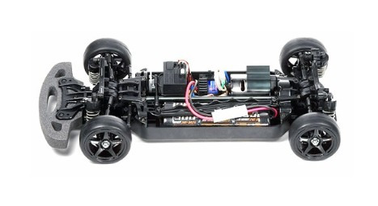

タミヤ TB-02

引用元画像：タミヤ公式サイト
📋 基本情報
| メーカー | タミヤ（Tamiya） |
|---|---|
| 機種名 | TB-02 |
| 型番 | 58386（レイブリック NSX 2004）など |
| 発売時期 | 2004年頃 |
| 生産状況 | 生産終了 |
| カテゴリー | ツーリングカー |
✨ 機種の特徴
- TBエボリューションIIIをベースとしたバスタブシャーシ
- シャフトドライブ4WD採用
- 組み立てやすい設計でエントリーユーザーに最適
- ボディマウント位置の調整が可能
- 後にTB-02Dドリフトスペックも登場
🔧 技術仕様
| 駆動方式 | シャフトドライブ4WD |
|---|---|
| シャーシタイプ | バスタブシャーシ |
| サスペンション | 4輪独立ダブルウィッシュボーン |
| ダンパー | CVA（Constant Velocity Air）ダンパー |
| モーター位置 | 横置き（センターマウント） |
🔨 修理難易度
難易度が上がった理由
- 生産終了から約20年経過し、純正パーツの供給が不安定
- 復刻版やドリフトスペックが一時的に販売されたが、すぐに品切れになった
- ギアやアームパーツなど、消耗品の在庫が少ない
- CVAダンパー専用のパーツ入手が困難
⚠️ 注意: 2020年代現在、パーツ入手がかなり困難なため、修理には事前のパーツ確認が必須です。
⚠️ よくある故障
- デフギアの摩耗: 長時間走行でギアが摩耗し動力伝達が不安定に
- ギアボックス内部の破損: クラッシュ時にギアが割れることがある
- サスペンションアームの破損: 経年劣化で樹脂が脆くなり割れやすい
- CVAダンパーの不調: エアが抜けて減衰力が低下
- ユニバーサルシャフトの摩耗: グリス切れで異音や引っかかりが発生
💡 修理のコツ
- パーツの在庫状況を事前に確認する（特に消耗品）
- 代替パーツの知識を持つ（TB-03などとの互換性を調査）
- ギアボックスは定期的にグリスアップを行う
- サスペンションアームは予備を確保しておく
- CVAダンパーは定期的にメンテナンスを行う
🔧 ぽすとそに工房での修理実績
TB-02は、エントリーツーリングカーとして多くのユーザーに親しまれたシャーシです。シンプルな構造で組み立てやすく、初心者にも扱いやすい設計でした。
現在はパーツ入手の困難さから修理が難しくなっていますが、当工房ではTB-03などの後継シャーシとの互換パーツを活用したり、汎用パーツで代用したりすることで、可能な限り修理対応を行っています。